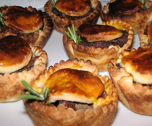

Lammfleisch Pastetli
5,5 von 6teig:
400 g mehl, 1 tl salz, 1/4 tl pfeffer mit 175 g butter in eine krümelige masse verwandeln. 200 g halbfettquark mit 2 el wasser vermischen und unter den teig geben. zu einem weichen teig zusammen fügen, nicht kneten, flach drücken. ca. 30 min zugedeckt im kühlschrank ruhen lassen.
füllung:
250 g lammfilets in kleine würfel schneiden und kurz anbraten, beiseite stellen. eine scharlotte, 2 knoblauchzehen und 1 tl rosmarinnadeln in der selben pfanne andämpfen. 4 gewürfelte toastbrot scheiben ohne rinden dazugeben und einwenig rösten. mit 1,5 dl rotwein ablöschen und einwenig einkochen, abkühlen lassen. den teig portionenweise ca. 2 mm auswallen. je 12 rondellen von ca. 11 cm und 6 cm ausstechen, grosse rondellen in die muffinsförmchen legen, füllen, die kleinen darauf legen, andrücken und mit einem eigelb bestreichen. bei 220 grad ca. 20 minuten backen.
